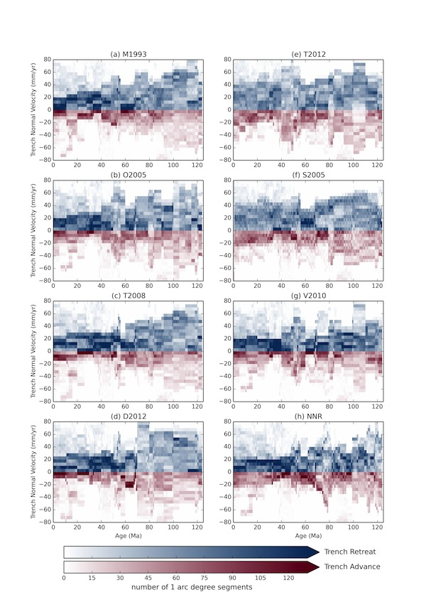
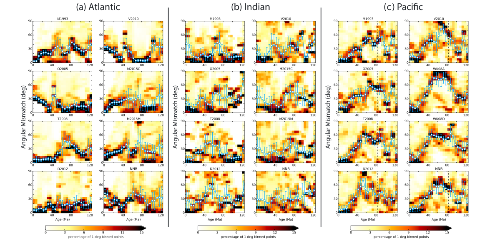

In Williams et al. (2015, EPSL), we used subduction zone kinematics as an independent test of eight published absolute plate motion (APM) models (hotspot tracks, tomographically mapped slab remnants, and no-net-rotation frames) by computing the trench advance and retreat each implies since 130 Ma. Hotspot and slab-remnant frames agree well for the last 70 Myr, but diverge sharply before that, where hotspot tracks are poorly constrained. The slab-remnant and net-rotation-minimising frames instead give more consistent trench behaviour further back, suggesting trench migration itself can be used as a criterion for building APM models deeper in time.

Figure 3, Williams et al. (2015).
Williams et al. (2016, GRL) approached the same problem from the opposite direction: rather than testing APM models against trenches, we tested them against seafloor spreading itself. Fracture zones preserve the exact direction each mid-ocean ridge was spreading in at the time crust formed: a record that has nothing to do with any assumed absolute reference frame. We found a significant alignment between spreading direction and APM since the Early Cretaceous, strongest for Atlantic ridges least influenced by slab pull, and weaker and more complex in the Pacific, where the mismatch may trace back to a major plate–mantle reorganisation. Spreading fabric turns out to be an independent constraint that can help improve APM models.

Figure 3, Williams et al. (2016).
Testing existing APM models against independent data is one thing; building a model that is optimal by construction is another. Tetley et al. (2019, JGR) replaced the usual approach of fitting hotspot tracks or slab remnants in isolation with a single automated optimisation: net rotation, trench migration and plate velocities are all minimised together, producing the first fully self-consistent, objective global APM model since the Triassic. Müller et al. (2022, Solid Earth) pushed the same optimisation approach back to 1 billion years ago, combining it with paleomagnetic data and tectonic rules tied to the assembly and breakup of supercontinents, to build the first continuous, self-consistent plate motion and paleogeographic model spanning a billion years of Earth history. The animation below is that optimisation stepping through deep time: plate boundaries (red = convergent, blue = divergent) and the underlying net-rotation vector field, evolving together from 540 Ma to the present.
The optimized absolute plate motion model stepping from 540 Ma to present, from Tetley et al. (2019) and Müller et al. (2022).